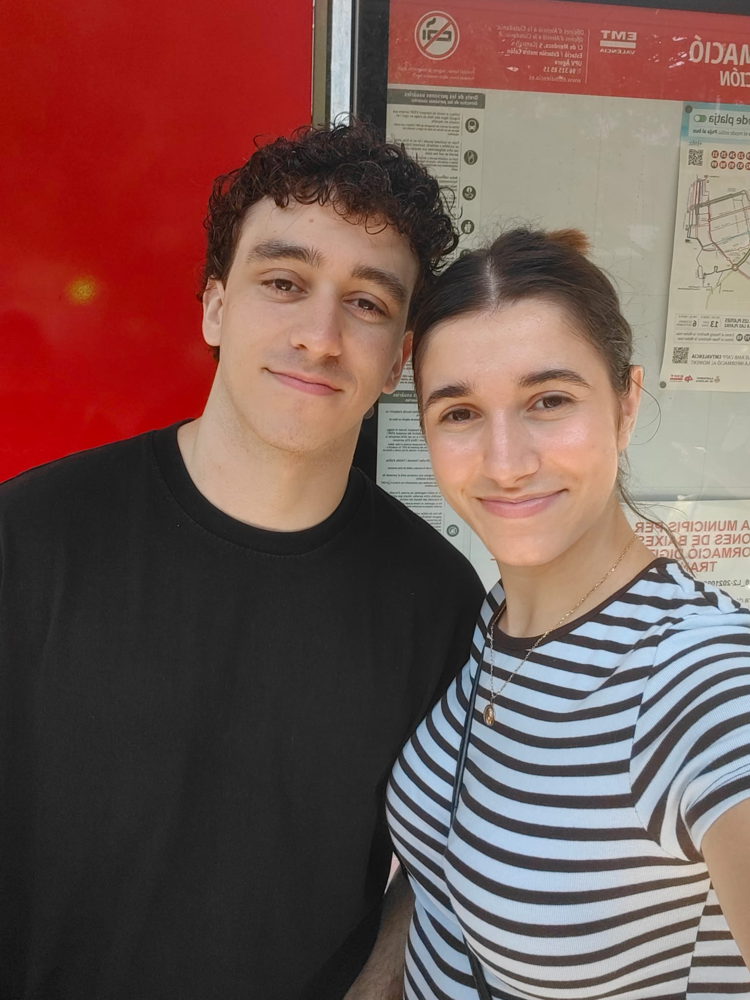
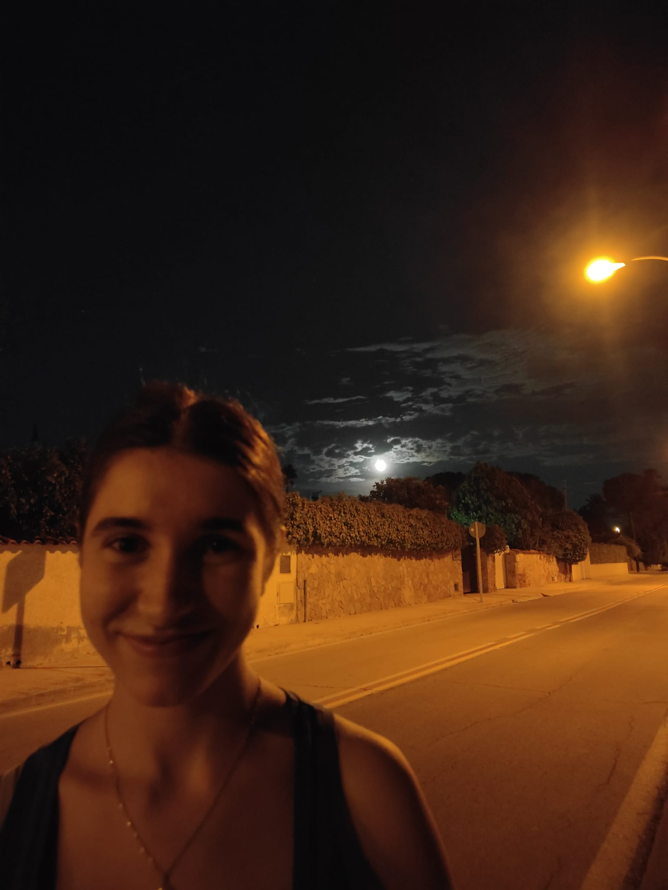
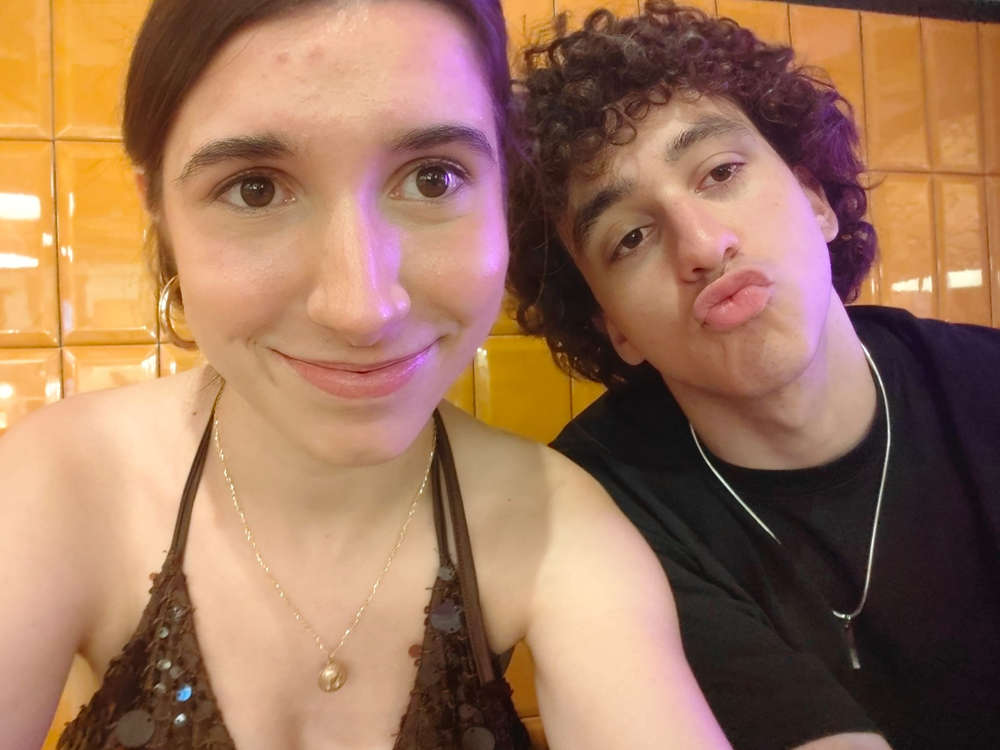
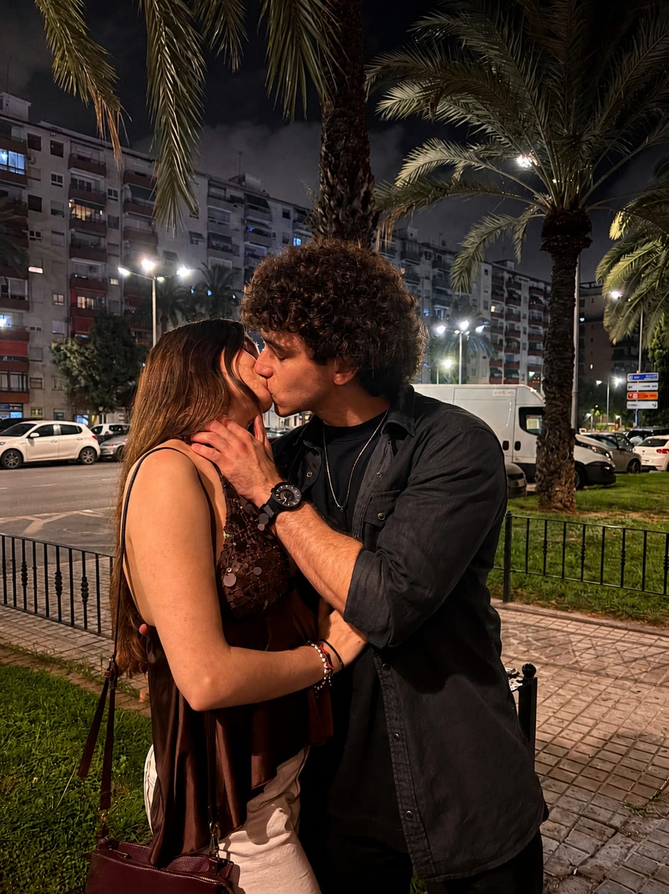
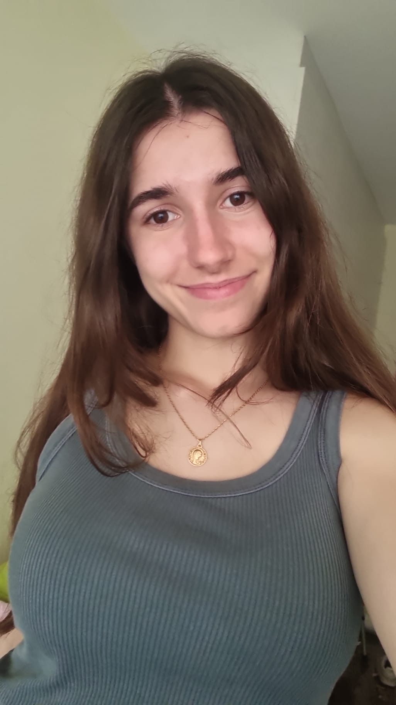
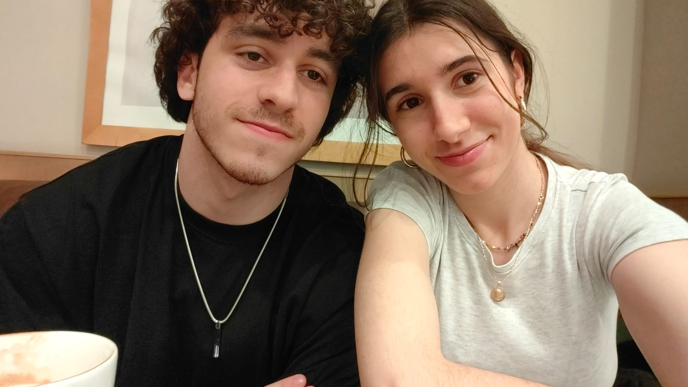
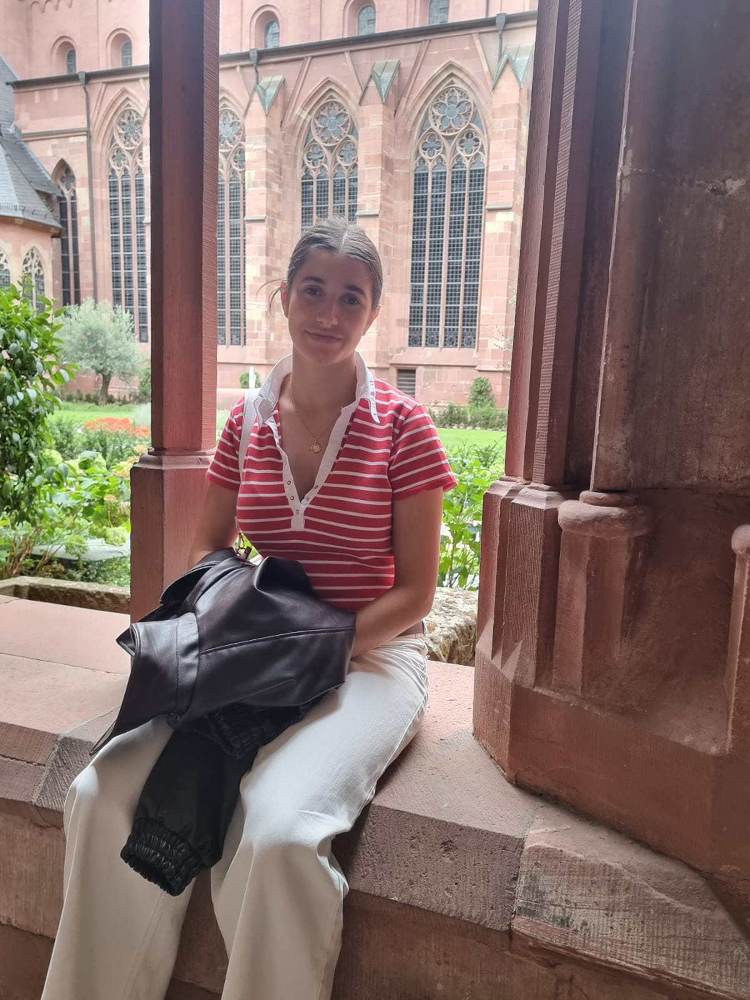
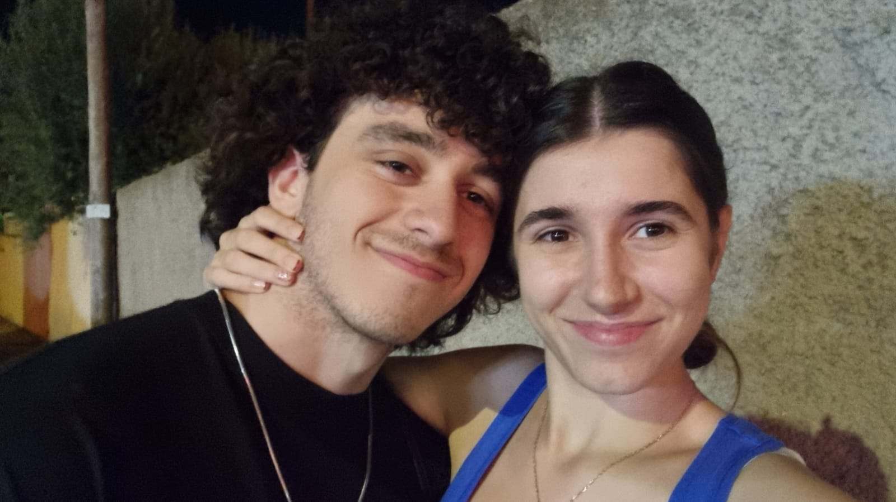

Para mi persona favorita en todo el mundo
Hoy se celebran 19 años desde que mejoraste el mundo, y yo celebro la suerte que tengo de que mejoraras el mío.
He escrito esto para tiHoy es el mejor día del año
No existen palabras ni regalos que se comparen con el que me has dado tú, porque me has hecho sentir amado, sentir que valgo y sobre todas las cosas me has hecho querer con ansias una vida a tu lado.
Espero que esta pequeña página al menos sirva para demostrarte un poco lo especial que eres, lo mucho que vales apreciar nuestros recuerdos y sobre todo lo mucho que deseo crear un millón de memorias contigo.
Para mi perfecta y preciosa Raquel.
Para mi amada Raquel, mi mejor amiga, mi compañera perfecta, mi ángel irremplazable. Si estás leyendo esta carta significa que ya habremos celebrado 19 años desde el día que la tierra ganó un nuevo ángel, y tengo la enorme dicha de decir que puedo acompañar a ese ángel en los caminos que la vida nos tenga preparados.
Quise hacer algo distinto en esta carta, espero la presentación de esta página te resulte digna del día de hoy, llevo desde que empecé los preparativos para tus regalos pensando en la inmensa suerte que tengo de tener a alguien como tú en mi vida, la imposibilidad de nuestros caminos cruzándose, así como la fragilidad y brevedad de la vida misma.
Somos un simple momento en el transcurso del mundo, pero contigo el mundo se siente tranquilo, callado, sereno, en paz...
Este es el primero de todos los cumpleaños que quiero pasar contigo, espero que cada vez sientas más el deseo del siguiente y que nuestro amor solo crezca con la llegada del próximo.
Quise darte los mejores regalos posibles pero lo cierto es que ninguno se equipara al que me das cada día, gracias por hacerme infinitamente feliz, gracias por hacerme sentir feliz de ver otro día al despertarme.
Quiero amarte hasta que nuestros rostros se llenen de arrugas, hasta que tengamos miles de historias que contar, hasta que tengamos una familia fruto de cuánto nos queremos, quiero tener el honor de adorarte cada día hasta que no dudes ni por un segundo la belleza de tu cuerpo y alma, aceptaría que la vida te lleve al cielo antes que a mí para sobrellevar el peso de la soledad en tu lugar y puedas descansar hasta que Dios permita vernos de nuevo.
Por siempre mi ángel irremplazable, mi perfecta compañera de vida, mi preciosa Raquel, te amo más que ayer y menos que mañana.
Mis ocho fotos favoritas y lo que significan para mí.







